Welcome to the Skin section!
Our skin is the largest organ in our entire body.
It acts as a vital protective barrier and sensory interface with the environment.
As humans, we are born with different skin tones, skin undertones and skin types.
It is important we know how our skin's reaction when exposed to sunlight, what colors to wear that will compliment us and bring out our features and how to take care of our skin.
Skin Categories
So lets get started.
- Skin types
You can identify your type using the bare-faced test: wash your face gently, pat it dry, wait 30 to 60 minutes without applying any products, and observe how your skin feels and looks
There are five skin types.
Normal Skin
- Smooth appearance and few to no blemishes.
- Barely visible pores.
- Neither oily or dry.
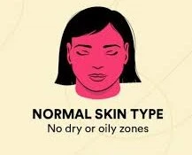
Dry Skin
- Tight feeling.
- Small to no pores.
- Flaky rough patches and prone to age lines.
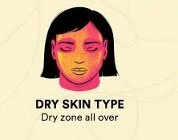
Oily skin
- Greasy or shiny appearance.
- Visible large pores.
- Prone to acne breakouts.
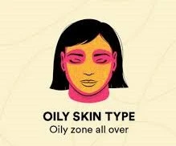
Sensitive Skin
- Itch skin.
- Reactive and easily irritated.
- Red patches.
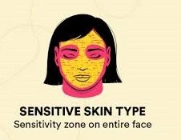
Combination Skin
- Mild skin sensitivity and blackheads around the nose at times.
- Visibly large pores around the nose.
- Shiny T-zone, cheeks and other areas are dry or normal.
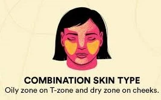
- Skin tones
Our skin tones are determined by melanin, a substance in your body that produces skin pigmentation.
Our skin tones are determined by genetics, lifestyle and sun exposure.
We are going to use Fitzpatrick scale, numerical classification schema for human skin color. It was developed in 1975 by American dermatologist Thomas B. Fitzpatrick as a way to estimate the response of different types of skin to ultraviolet (UV) light.
There are 6 different skin tones.
Pale white skin
- Extremely sensitive skin.
- Tends to burn easily and never tans in the sun.
- Common with people who have red hair and freckles.
White skin
- Very sensitive.
- Easily burns and tans minimally.
- Common with fair skinned, fair haired Caucasians and northen Asians.
Light medium skin
- Sensitive skin.
- Sometimes burns, slowly tans to light brown.
- Common with darker Caucasians, some Asians.
Olive / Light brown skin
- Mildly sensitive skin.
- Burns minimally, always tans to moderate brown.
- With Mediterranean and Middle Eastern Caucasians,southern Asians.
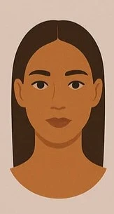
Dark brown skin
- Resistant skin.
- Rarely burns, tans well.
- With some Hispanics and some Africans.
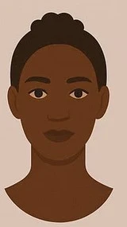
Deep pigmented dark brown to black skin
- Very resistant skin.
- Never burns, deeply pigmented.
- With darker Africans, Indigenous Australians.
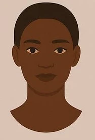
There are some variations in skin tones such as Vitiligo and Albinism.
They are cause changes in skin color, but they are very different conditions with distinct causes.
Vitiligo
- Acquired later in life (autoimmune/environmental).
- The patterns are patchy, irregular white spots.
- Hair in affected spots may turn white and eyes mostly unaffected (minor iris/retina shifts).
- The treatment are re-pigmentation therapies, light therapy, or topicals.
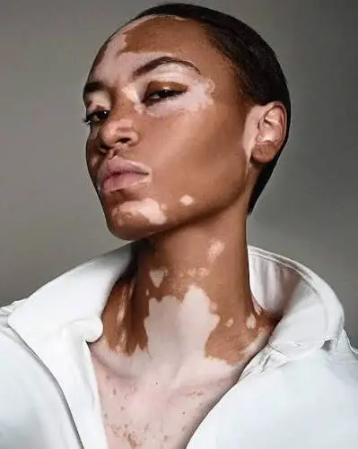
Albinism
- Present from birth (genetic).
- The patterns are usually symmetrical and can appear anywhere on the body.
- Has very light skin, hair, and eyes.
- Often has vision problems and is highly sensitive to sunlight.
- There is no cure and the focus is on sun protection and vision care.
- Skin undertones
It is the subtle, permanent color beneath the surface of your skin, and it is separate from your surface skin color (how light or dark your complexion is).
A common myth is that all dark skin is warm-toned; in reality, deep complexions can be warm, cool, neutral, or olive.
Two people with the same skin tone can still look totally different because of undertones.
There are 3 undertones
Warm Undertones
- Gold jewelry makes the skin light up and look vibrant.
- Warm cream, peach, yellow, olive cloth makes your face look smooth and healthy.
- When you look at your wrists, there are greenish veins.
- When you swatch two or three deep foundation shades (one warm/golden, one cool/red-blue, one neutral) along your jawline or the center of your chest in bright natural light, The right match disappears seamlessly into your skin rather than turning orange (too warm).
Cool Undertones
- Silver jewerly makes your features look crisp and clean.
- Stark white cloth or off-white, blue, black cloth flatters you without washing you out.
- When you look at your wrists, there are blue/purple veins.
- The skin burns before you tan
- When you swatch two or three deep foundation shades (one warm/golden, one cool/red-blue, one neutral) along your jawline or the center of your chest in bright natural light, the right match disappears seamlessly into your skin rather than turning gray (too cool/light).
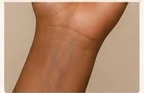
Neutral & Olive Undertones
- Both gold and silver jewelry look good.
- Ranges from beige to olive, usually tans more than it burns.
- When you look at your wrists and your veins are hard to tell.
- The skin is a mix of burning before a tan or tans quilckly.
- When you swatch two or three deep foundation shades (one warm/golden, one cool/red-blue, one neutral) along your jawline or the center of your chest in bright natural light, you look great in all.
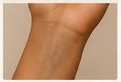